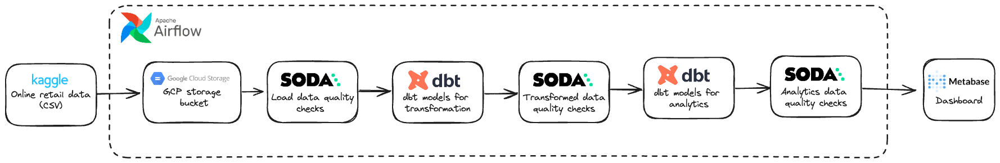

I’m a Data Engineer focused on building robust, scalable, and automated data solutions to solve complex business problems. My expertise spans real-time analytics, large-scale data processing, and integrating modern data technologies into enterprise environments.
I believe that words and data are the two most powerful tools to change the world.
My daily work revolves around writing code, solving technical challenges, and transforming raw data into actionable insight. I thrive on building data systems from scratch and optimizing existing pipelines for performance and reliability.
Built a Scrapy spider to monitor price changes across Flipkart and Amazon, storing results in PostgreSQL and sending daily email alerts.
Crawled housing listings from 10+ real estate portals, cleaned and transformed the data into CSV for market analysis.
Aggregated news headlines from multiple websites using Scrapy and published to a dashboard using Streamlit.
This project demonstrates an automated data pipeline using Apache Airflow to orchestrate data flow from Kaggle to Metabase dashboards. Key components include GCP Storage, dbt for transformation, and Soda for data quality checks at every stage.
